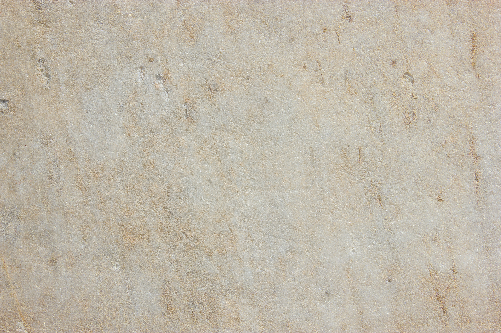

Brooke Chauntel Howard
I Love My Rocks
Something good in my life right now is my rocks. I know that sounds simple, but it has become more than collecting. I clean them with acid and watch the dirt, rust, grime, and old layers come loose. At first, some of them look plain, almost ugly, like nothing inside them could be worth saving. Then the surface starts to give way. A color comes through. A line appears. A crystal catches light in a place I did not expect. What looked dead or dirty starts looking alive.
I think that is why I love it so much. It feels psychological to me. The rock does not become beautiful because I imagined beauty into it. The beauty was already there, covered by whatever the world put on top of it. That makes me think about people, and about myself. Stress, shame, disappointment, addiction, fear, and other people's opinions can settle over a person until the outside starts looking like the whole truth. But maybe the outside is only the first layer. Maybe there is still something bright underneath, even if it takes time, pressure, and a little burn to reach it.
My husband teases me because I remember where I picked up each rock, but I do remember. I remember the road, the river edge, the patch of dirt, the exact place where I bent down and chose that one. Maybe that is silly, but I love that I remember. Location matters to me. I like knowing where something came from before it changed in my hands. I like knowing it had a life before it became clean.
Cleaning rocks makes me smile because it gives me a quiet kind of hope. Not loud hope. Not fake positivity. Just the kind that says something can be buried, stained, or overlooked and still not be ruined. I love the patience of it. I love the surprise. I love that I do not know what each rock is holding until I give it time. Right now, I am grateful for that feeling: beauty is not always gone just because it is hidden.